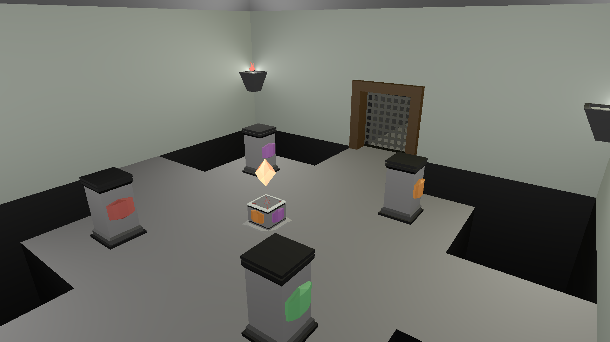
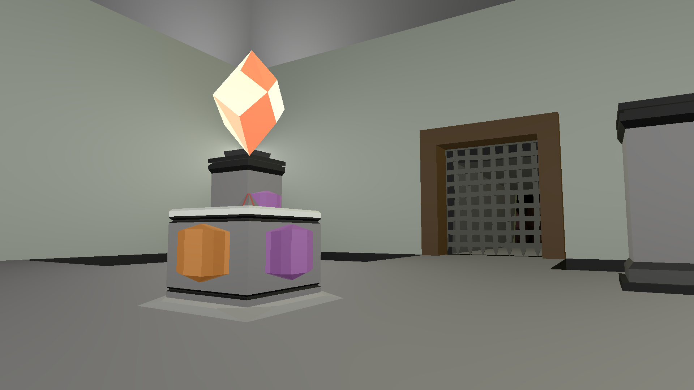
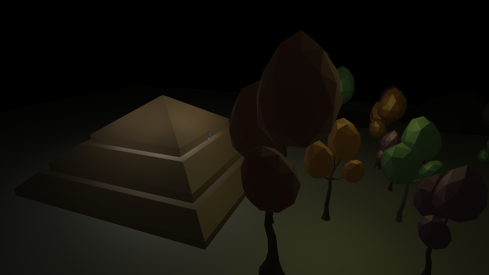
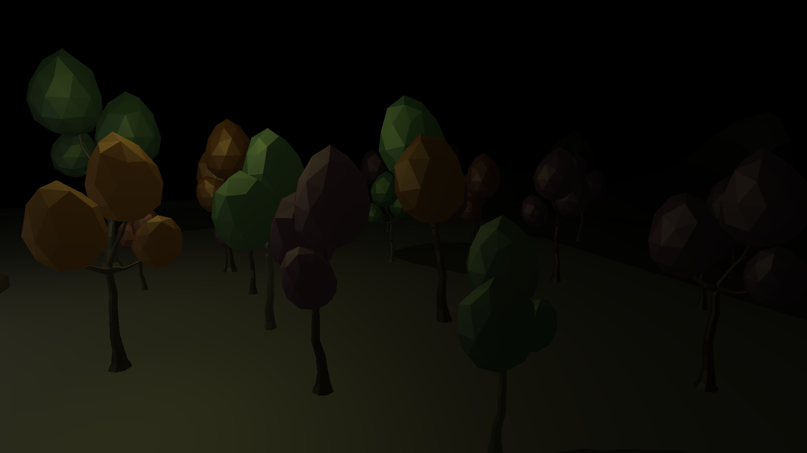

Wonderland
Programmiersprache: C++, OpenGL Software: Qt Datum: 2020-2021 Mitwirkende: Florian Brauner, Paul Hagedorn, Fabian Juppe, Lea Kuznik Sounds: Eva Sibbe Rolle: Programmierung
Beschreibung
Wonderland ist ein Adventurespiel in Egoperspektive. Der Spieler muss vier Säulen in die richtige Position bringen, um aus einer Pyramide zu entkommen.
Das Spiel wurde mit einem Szenegraphen für Qt von Prof. Dr. Bernd Dreier erstellt.



